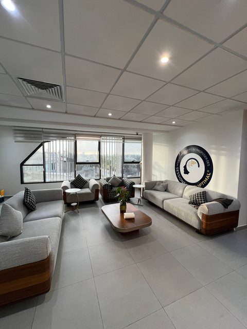
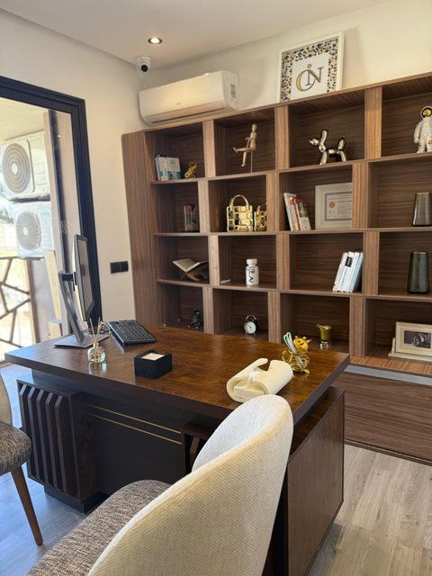
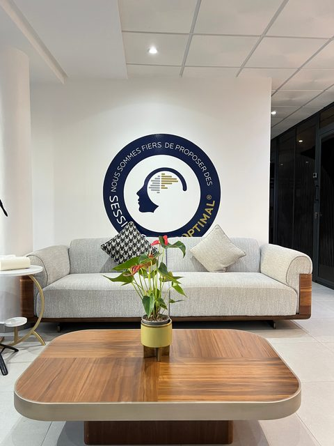

Libérez votre cerveau du stress
Entraînement cérébral naturel pour un sommeil profond, une concentration absolue et un esprit apaisé.
- Sans médicaments — 100% naturel
- Résultats dès la 1ère séance
- 4 centres au Maroc



Qu'est-ce que le Neurofeedback ?
Découvrez comment cette méthode d'entraînement cérébral passive utilise la plasticité naturelle du système nerveux.
Un Miroir de l'Activité Cérébrale
Le neurofeedback est une méthode scientifiquement validée qui permet au cerveau de s'auto-réguler. En observant sa propre activité en temps réel via des capteurs passifs, le cerveau apprend à corriger ses schémas de dysrégulation liés au stress, à l'anxiété ou à l'inattention.
Un processus simple et naturel
Le neurofeedback est une méthode non invasive qui permet à votre cerveau d'apprendre à mieux fonctionner, naturellement.
Écoute
Lors d'une séance, vous êtes confortablement installé. Des capteurs non invasifs mesurent l'activité électrique de votre cerveau en temps réel.
Feedback
Vous regardez un film ou écoutez de la musique. L'audio et le visuel s'adaptent instantanément selon l'activité de votre cerveau, créant un retour naturel.
Auto-Régulation
Votre cerveau apprend à s'optimiser lui-même. Séance après séance, de nouvelles connexions neuronales se forment pour un bien-être durable.
Accompagnements Neuro-Sensibles
Découvrez comment l'entraînement cérébral répond aux besoins neurologiques précis de chaque profil.
Pour les Parents
Votre enfant fait face à des défis d'attention (TDA/H), d'anxiété scolaire ou d'autisme ? Vous avez essayé les solutions traditionnelles et cherchez une alternative naturelle. Le neurofeedback NeurOptimal® entraîne doucement le cerveau à s'auto-réguler, s'attaquant à la cause profonde de la dysrégulation cérébrale.
- Sans aucun effet secondaire — entraînement 100% naturel.
- Amélioration prouvée de la concentration, de la mémorisation et de la régulation émotionnelle.
- Résultats durables et autonomie renforcée au quotidien.
Vétérans & Rescapés de Trauma
Les chocs émotionnels répétés, le stress post-traumatique (ESPT / PTSD) et les traumatismes crâniens (TBI) maintiennent votre système nerveux en état d'alerte permanent, provoquant insomnies et hypervigilance. Le neurofeedback ré-entraîne votre cerveau à sortir du mode "survie" pour retrouver calme, contrôle et résilience.
- Diminution significative des cauchemars et apaisement de l'hypervigilance.
- Restauration naturelle d'un sommeil profond et récupérateur.
- Réappropriation du contrôle émotionnel et paix intérieure retrouvée.
Peak Performers
Que vous soyez CEO, entrepreneur de haut niveau ou athlète, votre quotidien requiert une clarté mentale chirurgicale. Le neurofeedback est l'outil d'optimisation cérébrale ultime — le même que celui utilisé par les forces spéciales et les sportifs olympiques pour acquérir un avantage compétitif décisif.
- Focus ultra-précis et clarté mentale absolue sous forte pression.
- Amélioration de la résilience nerveuse et gestion optimale du stress.
- Prise de décision stratégique plus rapide et efficace.
Pour les Adultes
Vous vous sentez coincé dans un cycle infini d'anxiété chronique, de déprime, ou de fatigue nerveuse liée au burn-out ? Le neurofeedback offre une méthode douce pour rompre ce cercle vicieux en aidant votre système nerveux à retrouver son équilibre et sa paix interne naturelle.
- Libération progressive de l'anxiété latente et des attaques de panique.
- Réduction sécurisée et naturelle de la dépendance à la fatigue mentale.
- Qualité de sommeil restaurée et meilleure vitalité nerveuse.
Regarder la vidéo de Dr. Chadia
Une vision née d'une conviction profonde
Dr. Chadia Chakib a fondé l'INFC avec une conviction : chaque cerveau a la capacité de se réguler lui-même. Formée aux protocoles NeurOptimal® les plus rigoureux, elle a bâti le premier réseau de centres de neurofeedback premium au Maroc.
Les défis que nous aidons à surmonter
Une approche neuro-sensible, scientifiquement fondée, adaptée à chaque profil.
TDA/H & Attention
Difficultés de concentration, impulsivité et désorganisation chez l'enfant et l'adulte.
Anxiété & Stress
Anxiété généralisée, crises de panique, burn-out professionnel et surcharge mentale.
Sommeil & Récupération
Insomnie chronique, cauchemars récurrents, fatigue nerveuse persistante.
Trauma & ESPT
Séquelles émotionnelles, hypervigilance et stress post-traumatique après choc.
Performance Cognitive
Optimisation de la clarté mentale, prise de décision et résilience sous pression.
Humeur & Équilibre
Déprime, sautes d'humeur et instabilité émotionnelle impactant le quotidien.
Ce qui fonctionne aussi en complément
Espace Professionnels de Santé & Corps Médical
Les preuves cliniques, publications scientifiques et méta-analyses validant l'approche de régulation neuro-sensible.
🧬 Accès Privé - Documentation Clinique & Échanges
Vous êtes clinicien, médecin ou professionnel de la santé ? Accédez à notre base de données scientifique complète, recevez les dossiers cliniques de nos patients suivis au Maroc et planifiez une rencontre d'information scientifique avec nos praticiens certifiés.
- ✔ Bibliographie médicale complète (plus de 150 études référencées).
- ✔ Invitation exclusive à nos tables rondes et présentations cliniques régulières.
- ✔ Protocoles d'adressage direct pour vos patients complexes.
Pédiatrie & TDA/H
Méta-analyse clinique démontrant la réduction durable de l'inattention et de l'hyperactivité motrice chez l'enfant par l'entraînement en neurofeedback par rapport aux approches pharmacologiques conventionnelles.
📄 Lire l'étude clinique ➔Traumatismes Cérébraux (TBI) & ESPT
Étude clinique publiée démontrant une amélioration majeure de l'endormissement, de la gestion de la douleur et de l'atténuation des cauchemars chez les vétérans souffrant d'ESPT et de lésions crâniennes légères.
📄 Consulter l'article de recherche ➔Neuroplasticité & Sommeil Profond
Dossier scientifique explicatif sur la façon dont les micro-interruptions du signal NeurOptimal® stimulent la neuroplasticité intrinsèque du cerveau en favorisant les ondes delta et thêta indispensables au repos régulateur.
📄 Télécharger le rapport scientifique ➔Des Praticiens Experts à votre Écoute
Des professionnels qualifiés, formés aux protocoles scientifiques les plus exigeants pour vous accompagner vers l'équilibre.

Dr. Chadia Chakib
Spécialisée en régulation neuro-sensible et accompagnement des dysrégulations cognitives à l'INFC Maroc.

Yassine El Fassi
Expert en accompagnement du TDA/H, focus scolaire et accompagnement des enfants neuro-atypiques.

Dr. Samira Alami
Médecin consultante spécialisée en régulation du stress aigu, burn-out et cohérence neuro-cardiaque.
Un centre près de chez vous
4 centres d'excellence au Maroc, équipés des dernières technologies de neurofeedback pour votre bien-être.
Casablanca
- 📍 Twin Center, Tour Ouest, 5ème étage
- 📞 +212 522 60 60 09
- 🕒 Lun-Sam: 9h-19h
Prêt à transformer votre vie ?
Faites le premier pas vers un cerveau plus performant et un esprit apaisé. Notre évaluation en ligne et notre orientation personnalisée vous donneront un premier aperçu de vos besoins.
Évaluer mon Profil Cérébral ➔Analyse personnalisée en 2 minutes